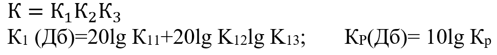

Лекции
Лекция 18
Усилители.
-
Назначение усилителей.
Усилителем называется устройство , которое осуществляет усиление мощности входного сигнала за счет энергии источника- энергии большой мощности с помощью управляющих элементов (транзисторов , триодов).
1- Источник входного сигнала;
2- Усилитель;
3- Нагрузка усилителя; (громкоговоритель, ЭД, нагреватели);
4- Источник питания; вырабатывает энергию с помощью значений U и I. -
Классификация усилительных устройств.
-
Параметры.
-
R- коэффициент усиления;
Коэффициенты усиления выражают в децибелах (Дб), тогда они исчисляются десятичными логарифмами.

- Rвх –сопротивление входа- сопротивление, которое оказывает усилитель входному сигналу;
- Rвых;
- Мерой частотных искажений служить коэффициент частотных
искажений:
M=K0/Kf;
K0- коэффициент усиления по средней частоте.
Кf – коэффициент усиления по рабочей частоте. - Чуствительность усилителья– определяет ,какой минемальный сигнал на входе
может быть усилен
усилителем.
Если Uвых < Uвх , то на входе сигнал определяется собственным уровнем шумов данного усилителя.
Шум определяется тремя составляющими:
- тепловая;
- флуактационная (прохождение носителей через переходы);
- внешние помехи (нестабильность источника питания).
- К.П.Д. Рвых
– выходная мощность
усилителя на источнике;
Рпотреб – потребляемая мощность усилителя от источника питания; -
Коэффициент усиления многокаскадного усилителя;

-
R- коэффициент усиления;
-
Характеристики.
- АЧХ – амплитудно – частотная характеристика.
Характеристика отображают его способность усилитель с определенной степенью точности, сигналы различной f и формы.
Из за присутствия в усилителе реактивных элементов сигналы разных f усиливаются не одинаково, а входные сигналы сдвигаются относительно входных на разные углы.
Рабочим диапазоном частота усилителя называют интервал частоты, в пределах которого модуль коэффициента усиления К остается постоянным или уменьшается (увеличивается) в заранее заданных пределах. -
ФЧХ- фазо – частотная характеристика.
φ-угол сдвига фазы выходного сигнала по отношению к фазе входного сигнала.
Положительные значения φ откладываются на вертикальной оси, соответствуют опережению фазы входного напряжения относительно фазы входного сигнала. Диапазон частоты от 0 до f0 называют диапазоном низких частота. На f0 φ=0, далее с увеличением частоты φ имеет отрицательное значение.
- АХ- амплитудная характеристика.
В рабочем диапазоне характеристика должна быть прямолинейна, для уменшения коэффицента искожения.
- АЧХ – амплитудно – частотная характеристика.
- Применение усилительных устройств.
- Виды усилителей.